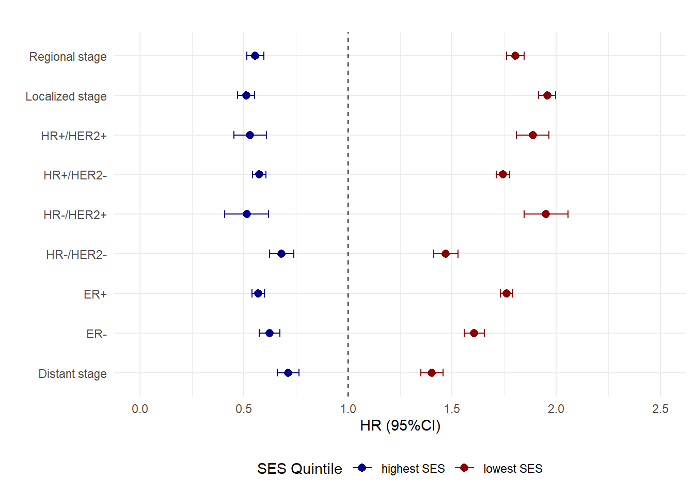
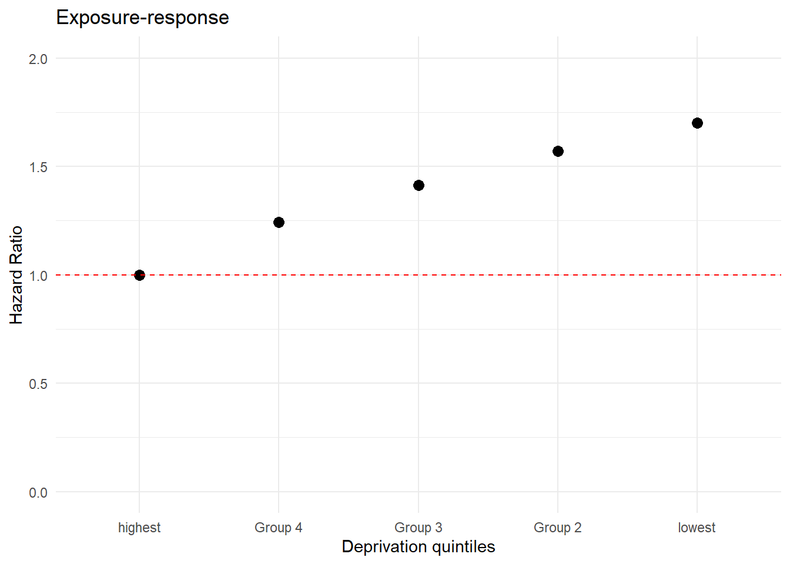

| var | HR+/HER2+ | _p | HR+/HER2- | _p | HR-/HER2+ | _p | HR-/HER2- | _p | RNA_n | _p | Unknown | _p |
|---|---|---|---|---|---|---|---|---|---|---|---|---|
| Stage | NA | NA | NA | NA | NA | NA | NA | NA | NA | NA | 0 | ========== |
| Localized | 28432 | 55.3421% | 236044 | 67.5922% | 10707 | 49.4367% | 30724 | 59.8593% | 102071 | 61.5427% | 17274 | 54.9253% |
| Regional | 18319 | 35.6574% | 96302 | 27.5765% | 8417 | 38.8632% | 16645 | 32.4293% | 52639 | 31.7382% | 6064 | 19.2814% |
| Distant | 4266 | 8.3036% | 15134 | 4.3337% | 2381 | 10.9936% | 3568 | 6.9515% | 8657 | 5.2197% | 3939 | 12.5246% |
| Unknown/unstaged | 358 | 0.6968% | 1738 | 0.4977% | 153 | 0.7064% | 390 | 0.7598% | 2487 | 1.4995% | 4173 | 13.2687% |
| Total | 51375 | 100% | 349218 | 100% | 21658 | 100% | 51327 | 100% | 165854 | 100% | 31450 | 100% |
| ER status | NA | NA | NA | NA | NA | NA | NA | NA | NA | NA | 0 | ========== |
| Positive | 49860 | 97.051% | 345792 | 99.019% | NA | NA | NA | NA | 122703 | 73.983% | 14638 | 46.542% |
| Negative | 1502 | 2.924% | 3243 | 0.929% | 21658 | 100.000% | 51327 | 100.000% | 31677 | 19.099% | 3104 | 9.869% |
| Recode not available | NA | NA | NA | NA | NA | NA | NA | NA | 1846 | 1.113% | NA | NA |
| Borderline/Unknown | 13 | 0.025% | 184 | 0.053% | NA | NA | NA | NA | 9628 | 5.805% | 13709 | 43.588% |
| Total | 51375 | 100% | 349219 | 100% | 21658 | 100% | 51327 | 100% | 165854 | 100% | 31451 | 100% |
| Subtype | NA | NA | NA | NA | NA | NA | NA | NA | NA | NA | 0 | ========== |
| API | 6010 | 11.698% | 34457 | 9.867% | 3055 | 14.106% | 4073 | 7.935% | 233 | 17.388% | 3178 | 10.105% |
| HIS | 7796 | 15.175% | 43406 | 12.429% | 3496 | 16.142% | 7420 | 14.456% | 296 | 22.090% | 5194 | 16.515% |
| NHB | 5894 | 11.473% | 31487 | 9.016% | 2947 | 13.607% | 10572 | 20.597% | 153 | 11.418% | 3807 | 12.105% |
| NHW | 31675 | 61.655% | 239869 | 68.687% | 12160 | 56.146% | 29262 | 57.011% | 658 | 49.104% | 19272 | 61.276% |
| Total | 51375 | 100% | 349219 | 100% | 21658 | 100% | 51327 | 100% | 1340 | 100% | 31451 | 100% |
| SES status | NA | NA | NA | NA | NA | NA | NA | NA | NA | NA | 0 | ========== |
| Group 1 (lowest SES) | 6890 | 13.637% | 41396 | 12.048% | 3269 | 15.324% | 8935 | 17.659% | 21413 | 13.061% | 5232 | 16.925% |
| Group 2 | 7871 | 15.579% | 49152 | 14.305% | 3377 | 15.831% | 8302 | 16.408% | 24275 | 14.806% | 5306 | 17.165% |
| Group 3 | 8752 | 17.323% | 59477 | 17.310% | 3738 | 17.523% | 9132 | 18.049% | 27689 | 16.889% | 5478 | 17.721% |
| Group 4 | 11434 | 22.631% | 79150 | 23.036% | 4778 | 22.398% | 11059 | 21.857% | 37262 | 22.728% | 6651 | 21.516% |
| Group 5 (highest SES) | 15576 | 30.830% | 114415 | 33.300% | 6170 | 28.924% | 13168 | 26.026% | 53310 | 32.516% | 8245 | 26.672% |
| Total | 50523 | 100% | 343590 | 100% | 21332 | 100% | 50596 | 100% | 163949 | 100% | 30912 | 100% |
| Poverty | NA | NA | NA | NA | NA | NA | NA | NA | NA | NA | 0 | ========== |
| Not persistent poverty census tract | 47655 | 92.80% | 327165 | 93.72% | 19864 | 91.75% | 46408 | 90.45% | 153572 | 92.66% | 28584 | 91.02% |
| Persistent poverty census tract | 3697 | 7.20% | 21913 | 6.28% | 1786 | 8.25% | 4899 | 9.55% | 12157 | 7.34% | 2821 | 8.98% |
| Total | 51352 | 100% | 349078 | 100% | 21650 | 100% | 51307 | 100% | 165729 | 100% | 31405 | 100% |
Malignant Breast Cancer Mortality and Socioeconomic Deprivation in the United States: SEER-17 (Specialized Dataset)
Introduction
We want to understand whether the association of deprivation (yost) differs by breast cancer subtype:
Methods
Data source
Data was obtained from the Surveillance, Epidemiology, and End Results (SEER) Program’s Seventeen Database (Specialized dataset), accessed through SEER*Stat version 8.4.0. The dataset comprises malignant breast cancer cases in females aged 35 to 84 years, spanning from 2006 to 2020 with follow-up until December 2020. Age at diagnosis was categorized into 5-year age groups (35 - 39, …, 80-84) and one-year time spans. Census tract-level socioeconomic status (SES) is available in quintiles. Race and ethnicity definitions follow the criteria established by the SEER program, employing an algorithm to recode detailed race and origin variables into four groups: Non-Hispanic White (NHW), Non-Hispanic Black (NHB), Hispanic (HIS), and Asian and Pacific Islander (API). For more information about the definitions and methodology used to create these specialized variables, refer to SEER Census Tract-Level Variables.”
Initially, 3,073,806 cases were included in the study. However, exclusions were made as follows: 17,792 cases were excluded because they were identified through death certificates or autopsy cases, 476,723 were non-malignant cases, 5,492 were cases alive with no survival time, and 508,959 were cases classified as multiple tumors (identified by Sequence Number 0 or 1). After these exclusions, the total number of records utilized for the analysis amounted to 2,082,632.
Statistical analysis :
The study assessed the proportions of ER status, breast cancer subtype, cancer staging, SES status, and persistent poverty and race and ethnicity within each breast cancer subtype. Mortality rates were calculated per 1,000 person-years. To quantify the hazard ratios between the variables, a Cox proportional hazards model was applied. All statistical analyses were conducted using the R software platform and relative survival estimates using SEER*stat software. The outcome was the time between the first breast cancer diagnosis and time to death.
Five-year age-standardized net survival was estimated using Pohar-Perme methods, stratified by subtype, stage, and SES status. Life tables by age, sex, race, ethnicity, and socioeconomic level (SES status) were constructed, validated, and provided by SEER, for detailsl seeMariotto et al.,. Differences in net survival estimates between the highest SES level and the lowest SES level were estimated using the standard error assuming that the variance of the sum (or difference) is the sum of the variances. To calculate the 95% Confidence Intervals (CIs) for the differences, the formula uses the standard error of the difference (se_diffs) multiplied by 1.96 for a 95% CI.
Results
Table 1: Characteristics of the Breast Cancer Cohort from 2006 - 2020 by Breast Cancer Subtype
Most patients across all breast cancer subtypes had localized disease, notably in the HR+/HER2- subtype (67.59%). The HR-/HER2- subtype presented higher proportion of distant metastases (10.99%) compared to 4.33% in HR+/HER2+ patients.
Non-Hispanic White (NHW) individuals were most common across subtypes, especially in HR+/HER2- (68.69%), while Non-Hispanic Black (NHB) individuals had a higher proportion in the HR-/HER2- subtype (20.60%).
Socioeconomic status (SES) showed a clear gradient across all subtypes, with the highest SES group (Group 5) being more pronaunced, particularly in the HR+/HER2- subtype (33.30%). Higher SES groups constituted a larger portion of most subtypes, with the HR-/HER2- subtype having a distinct distribution pattern: the lowest SES quintile encompassed 13.637% of HR+/HER2+ and 17.659% of cases.
Figure 1 - Hazard Ratios and 95% Confidence Intervals.
Individuals with the HR-/HER2+ subtype exhibited the highest hazard ratio (HR) of 1.95 (95% CI 1.85-2.06), closely followed by the HR+/HER2+ subtype with an HR of 1.89 (95% CI 1.81-1.97). Localized stage cancer had an HR of 1.96 (95% CI 1.92-2.00), indicating a significant impact of early disease stages among lower socioeconomic status (SES) quintiles, while distant stage cancer reported a lower HR of 1.40 (95% CI 1.35-1.46).
In the highest SES quintile, both the HR-/HER2+ subtype and localized stage cancer showed notably low HRs of 0.51 (95% CI 0.41-0.62) and 0.51 (95% CI 0.47-0.55) respectively. Conversely, in the lowest SES quintile, those with HR+/HER2- subtype had an HR of 1.74 (95% CI 1.71-1.78), but this figure dropped to 0.57 (95% CI 0.54-0.61) for individuals in the highest SES quintile with the same cancer subtype.

Note: Adjusted hazard ratios and 95% confidence intervals for the relative risk of death from malignant breast cancer in the most deprived quintile (red) and least deprived quintile (blue) by molecular subtype, ER status, and stage. The models are adjusted for age, stage, and race/ethnicity and poverty. The analysis accounts for potential confounding factors and is based on all-cause mortality.
Figure 2 - Exposure-response: HR by deprivation (SES status)
The figure below represents an exposure-response relationship between deprivation status (SES) and the hazard ratio for breast cancer mortality. Group 1, which has the lowest SES, shows the highest hazard ratio at 1.70, indicating the highest risk relative to the reference group (Group 5). As SES increases from Group 1 to Group 4, there is a consistent decrease in the hazard ratio, demonstrating a dose-response relationship between SES and breast cancer mortality.

Note: Adjusted hazard ratios and 95% confidence intervals for the relative risk of death from malignant breast cancer in the most deprived quintile (red) adjusted for age, stage, and race/ethnicity and poverty.
Table 2 - 5-year relative survival and differences between highest and lowest ses status
These results show differences in net survival rates between the highest and lowest SES (socioeconomic status) across various cancer subtypes and stages. The HR-/HER2+ subtype in the distant stage of cancer reported the most substantial differences in relative survival, with a difference of 20.4 percentage points between the highest and lowest SES groups (95% CI: 13.04 to 27.76). Similarly, the HR+/HER2- subtype in distant stages showed a notable difference in survival rates, with a 12.4 percentage point gap (95% CI: 9.34 to 15.46). HR+/HER2+ at Distant stages showed 18.3 points difference (95%CI 12.7 - 23.8).
| subtype | stage | year x | yost | n | net | lower_CI | Upper_CI | Difference | Lower_CI_95 | Upper_CI_95 |
|---|---|---|---|---|---|---|---|---|---|---|
| HR-/HER2- | Distant | 2005 | lowest | 782 | 10.4 | 7.9 | 13.3 | 2.6 | -1.716452 | 6.916452 |
| HR-/HER2- | Distant | 2005 | highest | 710 | 13.0 | 9.9 | 16.5 | 2.6 | -1.716452 | 6.916452 |
| HR-/HER2- | Localized | 2005 | lowest | 4976 | 87.8 | 86.3 | 89.1 | 6.5 | 4.919797 | 8.080203 |
| HR-/HER2- | Localized | 2005 | highest | 8416 | 94.3 | 93.4 | 95.1 | 6.5 | 4.919797 | 8.080203 |
| HR-/HER2- | Regional | 2005 | lowest | 3195 | 61.1 | 58.9 | 63.3 | 11.0 | 8.214317 | 13.785683 |
| HR-/HER2- | Regional | 2005 | highest | 4051 | 72.1 | 70.3 | 73.8 | 11.0 | 8.214317 | 13.785683 |
| HR-/HER2+ | Distant | 2005 | lowest | 413 | 29.1 | 23.8 | 34.6 | 20.4 | 13.042817 | 27.757183 |
| HR-/HER2+ | Distant | 2005 | highest | 586 | 49.5 | 44.5 | 54.4 | 20.4 | 13.042817 | 27.757183 |
| HR-/HER2+ | Localized | 2005 | lowest | 1498 | 91.5 | 88.8 | 93.5 | 7.7 | 5.220774 | 10.179226 |
| HR-/HER2+ | Localized | 2005 | highest | 3330 | 99.2 | 97.6 | 99.7 | 7.7 | 5.220774 | 10.179226 |
| HR-/HER2+ | Regional | 2005 | lowest | 1374 | 76.2 | 73.1 | 79.0 | 12.5 | 9.071400 | 15.928600 |
| HR-/HER2+ | Regional | 2005 | highest | 2283 | 88.7 | 86.8 | 90.4 | 12.5 | 9.071400 | 15.928600 |
| HR+/HER2- | Distant | 2005 | lowest | 2461 | 27.4 | 25.0 | 29.7 | 12.4 | 9.338382 | 15.461618 |
| HR+/HER2- | Distant | 2005 | highest | 3960 | 39.8 | 37.8 | 41.8 | 12.4 | 9.338382 | 15.461618 |
| HR+/HER2- | Localized | 2005 | lowest | 26363 | 98.3 | 97.7 | 98.8 | 1.7 | 1.112000 | 2.288000 |
| HR+/HER2- | Localized | 2005 | highest | 81349 | 100.0 | NA | NA | 1.7 | 1.112000 | 2.288000 |
| HR+/HER2- | Regional | 2005 | lowest | 12818 | 84.8 | 83.8 | 85.7 | 9.8 | 8.744508 | 10.855492 |
| HR+/HER2- | Regional | 2005 | highest | 29616 | 94.6 | 94.2 | 95.1 | 9.8 | 8.744508 | 10.855492 |
| HR+/HER2+ | Distant | 2005 | lowest | 763 | 35.4 | 31.3 | 39.6 | 18.3 | 12.749358 | 23.850642 |
| HR+/HER2+ | Distant | 2005 | highest | 1106 | 53.7 | 50.0 | 57.3 | 18.3 | 12.749358 | 23.850642 |
| HR+/HER2+ | Localized | 2005 | lowest | 3530 | 96.8 | 95.2 | 97.8 | 3.2 | 1.707308 | 4.692691 |
| HR+/HER2+ | Localized | 2005 | highest | 9264 | 100.0 | NA | NA | 3.2 | 1.707308 | 4.692691 |
| HR+/HER2+ | Regional | 2005 | lowest | 2627 | 84.4 | 82.3 | 86.3 | 9.6 | 7.408653 | 11.791347 |
| HR+/HER2+ | Regional | 2005 | highest | 5253 | 94.0 | 92.9 | 94.9 | 9.6 | 7.408653 | 11.791347 |
The Interaction of Socioeconomic Status and Race/Ethnicity on Breast Cancer Mortality
Table 1 describe the proportion of deprivation (SES) among race and ethnicity groups.
[1] 1 2| API | % | HIS | % | NHB | % | NHW | % | |
|---|---|---|---|---|---|---|---|---|
| Group 1 (lowest SES) | 3225 | 5.10 | 17112 | 20.31 | 24436 | 34.64 | 42362 | 9.57 |
| Group 2 | 5890 | 9.31 | 17767 | 21.09 | 14814 | 21.00 | 59812 | 13.51 |
| Group 3 | 9226 | 14.58 | 16900 | 20.06 | 11827 | 16.77 | 76313 | 17.23 |
| Group 4 | 16212 | 25.63 | 16876 | 20.03 | 11539 | 16.36 | 105707 | 23.87 |
| Group 5 (highest SES) | 28707 | 45.38 | 15601 | 18.52 | 7918 | 11.23 | 158658 | 35.83 |
Measures of addictive interaction
Details on the methods can be obtained elsewhere Kalilani and Atashili 2006
To evaluate the interaction between deprivation (SES) and race/ethnicity, we first fit a model that includes the effects of SES and race, followed by their interaction term (multiplication between SES and race) to obtain the coefficients. The formula is represented as follows:
λ(t,x) = exp( βses + βrace + (βses * βrace) λ0(t)
We created a list to store all coefficients (summary(mod). Another list was also created to contain the covariance matrix (cov.matrix). In our example, we are interested in evaluating an interaction from a public health perspective. Hence, one might be interested in examining the effects of low and medium SES compared to high SES, as well as the effects of race compared to NHW. The reference categories were set as high SES and NHW. Below is the general equation, simplified to describe the effects of SES and race, along with the interaction coefficients. Now, we can estimate the Hazard Ratios (HRs).
Then, we simplify the equation (Details in Supplement):
The Table 2 presents hazard ratios (HRs) along with their 95% confidence intervals (CIs), examining the interaction effect between socioeconomic status (SES; categorized as High, Medium, Low) and race/ethnicity (NHW, API, NHB, HIS) on malignant breast cancer mortality.
The effects of deprivation (SES) on race and ethnicity are challenging to interpret. However, no significant heterogeneity in the HRs was observed. One might suggest that patients diagnosed with malignant breast cancer within the racial and ethnic groups in the midle and low SES have a higher risk of dying, independent of race and ethnicity group. Same can’t be seen for the highest SES where the results are heterogeneous.
Another way to interpret is that these tables suggest differences in hazard ratios, with NHB consistently exhibiting higher HRs compared to NHW (the reference group), regardless of SES. API and HIS experience lower HRs at higher SES levels but show an increased relative risk as SES decreases.
Note that further analysis should include non-proportional baseline hazard terms (rcs)
| Race | High.SES | X95.CI.High | Medium.SES | X95.CI.Medium | Low.SES | X95.CI.Low |
|---|---|---|---|---|---|---|
| NHW | Ref | 1.55 | (1.50-1.59) | 2.11 | (2.04-2.17) | |
| API | 0.74 | (0.86-0.97) | 1.34 | (1.27-1.42) | 1.42 | (1.26-1.59) |
| NHB | 1.59 | (1.48-1.71) | 2.02 | (1.92-2.13) | 2.69 | (2.59-2.79) |
| HIS | 0.91 | (0.86-0.97) | 1.18 | (1.09-1.27) | 1.69 | (1.61-1.78) |
By rearranging the coefficients, we can observe the effect of race/ethnicity within each deprivation group (SES). It can be seen that patients across all races and ethnicities experience higher rates in the lower and medium deprivation groups compared to the highest deprivation group.
| Race | High.SES | X95.CI.High | Medium.SES | X95.CI.Medium | Low.SES | X95.CI.Low |
|---|---|---|---|---|---|---|
| NHW | ref | 1.55 | (1.50-1.59) | 2.11 | (2.04-2.17) | |
| API | ref | 1.59 | (1.45-1.73) | 1.91 | (1.69-2.16) | |
| NHB | ref | 1.26 | (1.16-1.37) | 1.68 | (1.56-1.81) | |
| HIS | ref | 1.46 | (1.35-1.59) | 1.85 | (1.71-1.99) |
References
Breast cancer incidence and survival in Scotland by socio-economic deprivation and tumour subtype Ref
On Estimation in Relative SurvivalRef
Expected Survival Life Tables, Released March 2024Ref, for detaisl
Geographical, racial and socio-economic variation in life expectancy in the US and their impact on cancer relative survivalRef.
Rothman KJ, Greenland S, Lash TL. Modern Epidemiology. Philadephia: Wolters Kluwer/Lippincott Wolliams & Wilkins, 2008.
Kalilani and Atashili 2006. Measuring additive interaction using odds ratios. Ref